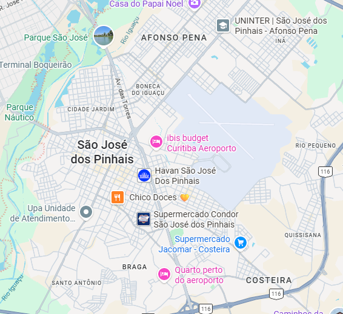

Índice AQI: 60
Classificação: Bom
Poluente principal: PM2.5
🌱 Qualidade boa para atividades ao ar livre.
🔔 Aviso: Não há alerta ativo para a cidade.

📍 Região Metropolitana de Curitiba · São José dos Pinhais